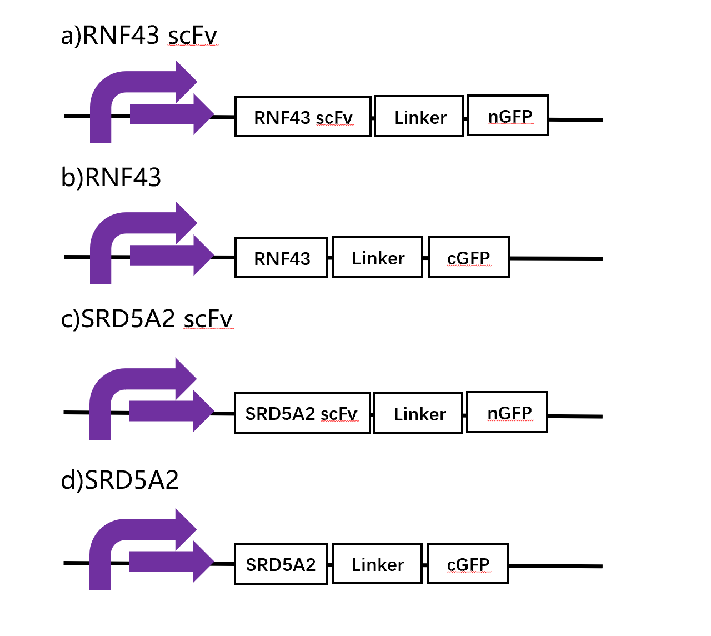
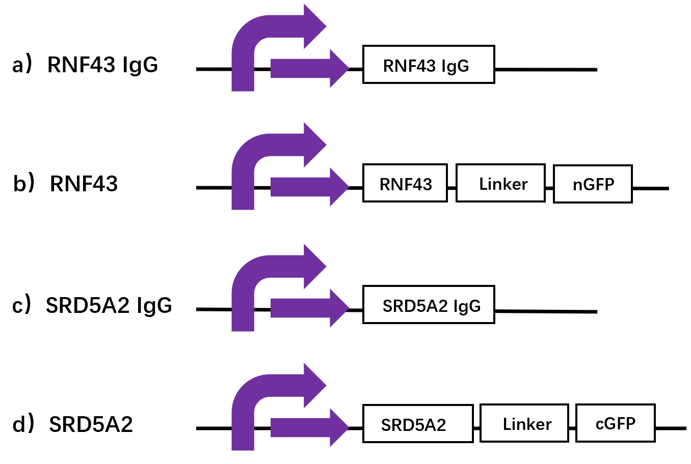
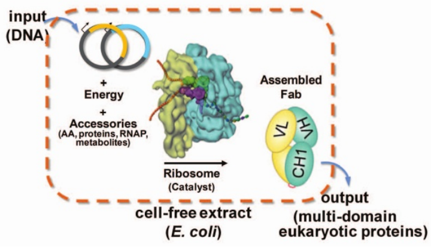
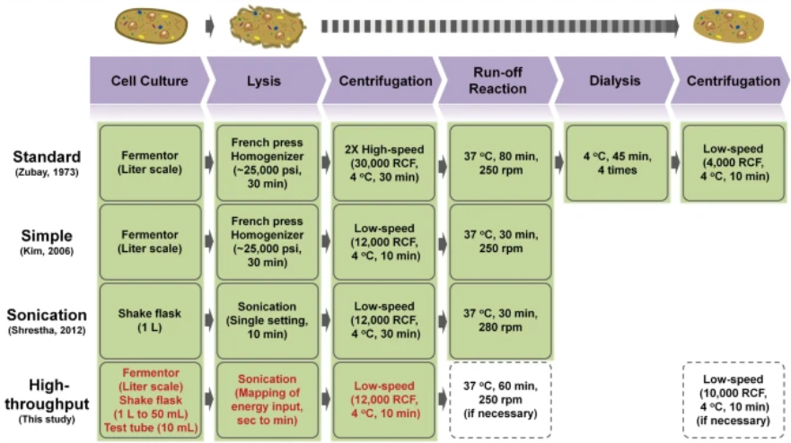
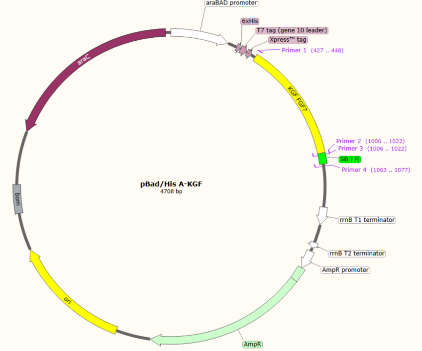
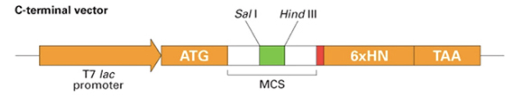
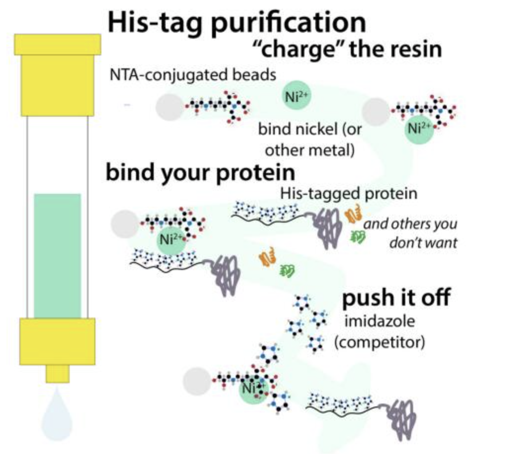
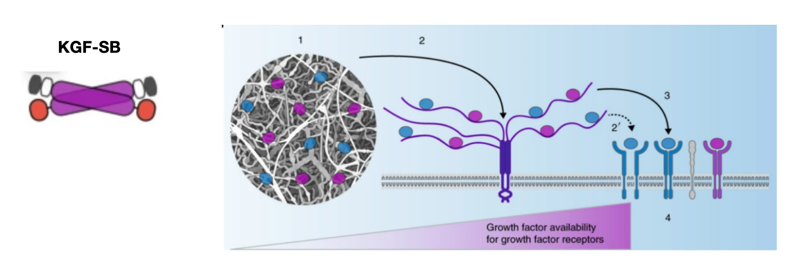

Loading...

Design
Chassis Selection
We have opted to use E. Coli Strain KGK10 as our chassis organism. This choice is underpinned by a series of remarkable characteristics that make it highly suitable for our genetic engineering endeavors.
E. Coli Strain KGK10 comes with a precisely defined genetic makeup. Through strategic gene deletions and modifications, it has been tailored to provide an optimal environment for genetic manipulation. For instance, the deletion of genes like ΔendA significantly reduces the background of endogenous endonuclease activity. This is of great importance as it minimizes the risk of unwanted DNA cleavage during the introduction of exogenous genetic material, thereby enhancing the stability and efficiency of gene cloning processes.
When it comes to biosafety, E. Coli Strain KGK10 meets stringent standards. It has been carefully engineered to lack genes associated with pathogenicity and virulence. As per the established biosafety guidelines, it belongs to a low-risk category, posing minimal threats to laboratory personnel and the surrounding environment. This not only ensures a safe working environment but also simplifies the regulatory procedures associated with our research and development activities.
Cure Module
AbTAC function verification module
Cycle 1: Functional verification of each antibody
Design1
We obtained highly specific monoclonal phage, and obtained scFv antibody genes of RNF43 and SRD5A2 by sequencing. SnugDock was used to optimize the antibody-antigen flexible docking. In this cycle, we need to use Linker to fuse the antibody to the N-terminal part of GFP and the antigen to the C-terminal part of GFP to verify the effectiveness of each antibody by bimolecular fluorescence complemency (BiFC) technology, since the antibody may have non-specific binding to the antigen after fusion with the phage coat protein.
Build1
To verify the role of each antibody, we decided to build the following genetic pathways:

AbTAC function verification module-2
Build2
We constructed the following genetic pathways:

Cell-free protein synthesis system
Based on the need for antibody double-strand assembly in vitro, we selected a cell-free protein synthesis system to produce AbTac. Compared with traditional in vivo production methods, cell-free protein synthesis systems have obvious advantages: higher synthesis rates, easy to add regulatory factors, convenient for the extraction and purification of target proteins, etc. Most importantly, cell-free protein synthesis systems can focus energy mainly on targeted protein synthesis, rather than maintaining cell survival.
We chose to construct a cell-free expression system using E. coli lysate. Among the existing cell-free expression systems, E. coli lysate has attracted more attention due to its advantages of easy preparation and high protein synthesis rate. E. coli lysate has been used in the research of IgG antibody production[i].

Figure 1: Schematic diagram of cell-free protein synthesis system[1]
In order to construct this cell-free expression system, firstly we needed to prepare E. coli lysate. E. coli was cultured to exponential growth stage and the cells were broken by ultrasound. Then added the DNA template,amino acids, NTPs, energy substrate and other cofactors to the lysate.(The ratio of light chain and heavy chain template was controlled to 1:1, and the light chain reaction was first added for 1 hour. Because the light chain can help the heavy chain fold correctly). Finally, the target protein AbTac was purified by chromatography after centrifugation.

Figure 2: Preparation method of E. coli lysate.
Note: The method in the last line was adopted in our project[Ⅲ]
In order to further improve the production of the cell-free expression system, we adopted the following methods: ①Since the main problem of E. coli expression of eukaryotic proteins is that the proteins containing multiple disulfide bonds cannot be correctly folded, 10μM disulfide isomerase companion DsbC was added to the reaction system to promote the formation of disulfide bonds and the correct folding of proteins. ②Glutathione buffer was added to adjust the REDOX conditions and affect the enzyme activity. ③In cell-free synthesis, translation initiation rather than extension is the rate-limiting step[Ⅳ]. Therefore, we optimized the translation initiation sequence TIR for the upstream untranslated region of the antibody gene to optimize the translation initiation step, as detailed in the engineering section.
Growth Module
Growth factors (GFs) are cytokines that stimulate cell growth. They can effectively stimulate the growth of hair follicle cells, improve the scalp microenvironment and blood supply to the scalp. In many randomized clinical trials, the safety and efficacy of repeated injections of growth factors have been proven. However, most growth factors are produced by human cells. They come in a wide variety of types, and it is difficult to achieve high-yield production of a specific growth factor.
We found that among the growth factors capable of promoting hair regeneration, there is a type called keratinocyte growth factor 2 (KGF-2), which can be produced through engineering in Escherichia coli. By adding a protein tag, this protein can be separated and purified. In the final organoid co-culture, it showed good growth-promoting effects.
Efficient systems usually mimic the slow release and controlled signaling of growth factors in vivo. The stability, bioavailability, and signal transduction of growth factors are also strictly regulated on the cell surface through binding to transmembrane heparan sulfate proteoglycans. In particular, synthetic substances can regulate the availability and signal transduction of various growth factors by acting as receptors on the cell surface, which can greatly enhance the functionality of growth factors.
Therefore, we selected a sequence from laminin that has a high-affinity binding to cell-surface proteoglycans and linked it to the C-terminus of the growth factor to construct a recombinant growth factor. Through this modification, the local residence time of the recombinant growth factor on the cell surface is prolonged, which in turn triggers a relatively low-level but continuous form of signal transduction (tonic signal transduction), enhancing the regeneration-promoting ability of the growth factor.
Vector Build
Preparation of Recombinant Human Keratinocyte Growth Factor - 2 (rhKGF - 2) Expressed in Escherichia coli Using a Plasmid with a His - Tag

Using human KGF - 2 cDNA as a template, Taq DNA polymerase and the following primers were employed:
Primer [A]: 5’ - GGATCCTTGGTCAGGACATGGTG - 3’
Primer [B]: 5’ - GAATTCCTATGAGTGTACCACCATTGG - 3’
The cDNA encoding human KGF - 2 (amino acids 40–208) was amplified by PCR for 25 cycles. After digestion, the amplified product was ligated into the EcoRI/BamHI sites of the expression vector pCMV3 - C - and then transfected into the Escherichia coli strain BL21(DE3).
Selection of Histidine Tag

Purification Principle
We changed the protein tag to a histidine tag (His Tag). The His tag has a small molecular weight of only about 0.84 KD. Generally, whether it is cleaved after expression does not affect the structure and function of the recombinant protein. Moreover, it has relatively low immunogenicity, can be applied to various expression systems, and the purification conditions are mild with simple operations.

Final Product and Mode of Action

A sequence from laminin that can bind to cell-surface proteoglycans with high affinity was selected and linked to the C-terminus of the growth factor. After the modification, the local residence time of the recombinant growth factor on the cell surface is prolonged. This, in turn, triggers a relatively low-level but continuous form of signal transduction (tonic signal transduction), thereby enhancing the regeneration-promoting ability of the growth factor.
Advantage Comparison: KGF
Advantages of KGF
KGF stands out for its high specificity and direct stimulatory effect on hair follicle cells. It can not only promote the proliferation and differentiation of hair follicle cells but also reduce hair loss, demonstrating strong anti-damage ability. Moreover, the mechanism of action of KGF is relatively simple and clear, which helps to minimize the occurrence of side effects.
Functions of Other Growth Factors
Although FGF, HGF, and VEGF also play important roles in promoting hair growth, their mechanisms of action are relatively complex and may involve multiple signaling pathways and cell types. Therefore, when using them, their non-specific effects and potential risks need to be taken into consideration.
References
[1] Xu YR, Lee J, Tran C, et al. Production of bispecific antibodies in “knobs-into-holes” using a cell-free expression system[J]. mAbs, 2015, 7(1): 231-242.
[2] Hou JQ, Jiang N, Ma LJ, et al. Cell-free protein synthesis: from basic research to engineering applications[J]. Synthetic Biology Journal, 2022, 3(03): 465-486.
[3] Kwon YC, Jewett MC. High-throughput preparation methods of crude extract for robust cell-free protein synthesis[J]. Scientific Reports, 2015, 5: 8663.
[4] Yin G, Garces ED, Yang JH, et al. Aglycosylated antibodies and antibody fragments produced in a scalable in vitro transcription-translation system[J]. mAbs, 2012, 4(2): 217-225.